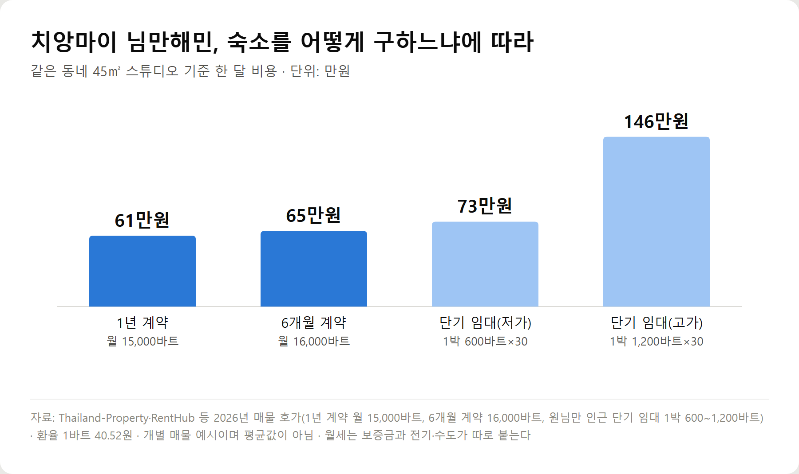
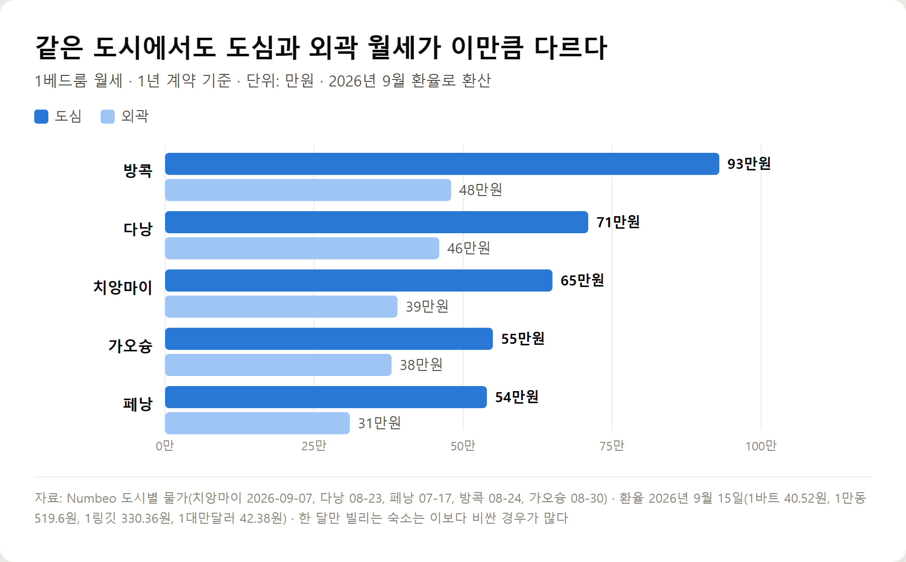

<meta charset="utf-8">
<title>해외 한달살기 숙소 구하는 법 — 방식별 비용과 계약 체크리스트 — 나의 투자 그리고 행복한 여행</title>
<meta name="description" content="치앙마이 기준 1년 계약 월 61만원, 단기 임대 73만~146만원. 해외 한달살기 숙소를 호텔·에어비앤비·서비스드 아파트·현지 월세로 비교하고 보증금·공과금·계약 확인 사항과 선입금 사기 예방법까지 정리했습니다.">
<meta name="viewport" content="width=device-width, initial-scale=1">
<link rel="canonical" href="https://worldtraveler1.tistory.com/69">
<link rel="preconnect" href="https://fonts.googleapis.com">
<link rel="preconnect" href="https://fonts.gstatic.com" crossorigin>
<link rel="stylesheet" href="https://fonts.googleapis.com/css2?family=Hahmlet:wght@400;600;800&family=IBM+Plex+Mono:wght@400;500&family=IBM+Plex+Sans+KR:wght@300;400;500;600&display=swap">

<style>
  :root{
    --paper:#F2EEE6;--surface:#FAF8F3;--surface-2:#E7E1D5;
    --ink:#191510;--ink-2:#4A4235;--ink-3:#7D7364;
    --line:#D6CEBF;--line-soft:#E4DDD0;--accent:#B06A15;--accent-bright:#C2761A;
    --up:#E5484D;--down:#3B82F6;
    --f-display:"Hahmlet",'Nanum Myeongjo',"Apple SD Gothic Neo",serif;
    --f-body:"IBM Plex Sans KR","Apple SD Gothic Neo","Malgun Gothic",sans-serif;
    --f-mono:"IBM Plex Mono","SFMono-Regular",Consolas,monospace;
    --pad:clamp(20px,5vw,64px);
  }
  @media (prefers-color-scheme:dark){
    :root:not([data-theme="light"]){
      --paper:#0B1120;--surface:#121A2C;--surface-2:#1A2439;
      --ink:#E9EEF7;--ink-2:#A9B5C9;--ink-3:#72809A;
      --line:#26314A;--line-soft:#1D2739;--accent:#E8A33D;--accent-bright:#F0B45C;
    }
  }
  *{box-sizing:border-box;}
  body{margin:0;background:var(--paper);color:var(--ink);font-family:var(--f-body);
    font-weight:300;font-size:1rem;line-height:1.75;-webkit-font-smoothing:antialiased;}
  a{color:inherit;}
  img{max-width:100%;height:auto;}
  .wrap{max-width:760px;margin:0 auto;padding-inline:var(--pad);}
  .nav{position:sticky;top:0;z-index:20;background:color-mix(in srgb,var(--paper) 88%,transparent);
    backdrop-filter:saturate(180%) blur(12px);border-bottom:1px solid var(--line);}
  .nav-in{display:flex;align-items:center;justify-content:space-between;height:58px;}
  .brand{font-family:var(--f-display);font-weight:600;font-size:1rem;letter-spacing:-.02em;text-decoration:none;}
  .back{font-family:var(--f-mono);font-size:.72rem;color:var(--ink-3);text-decoration:none;}
  .article{padding-block:clamp(40px,7vw,72px) clamp(56px,9vw,96px);}
  .eyebrow{font-family:var(--f-mono);font-size:.68rem;letter-spacing:.16em;text-transform:uppercase;
    color:var(--accent);margin:0 0 14px;}
  h1{font-family:var(--f-display);font-weight:800;font-size:clamp(1.6rem,4.4vw,2.3rem);
    line-height:1.3;letter-spacing:-.03em;margin:0 0 16px;}
  .byline{font-family:var(--f-mono);font-size:.72rem;color:var(--ink-3);
    padding-bottom:24px;border-bottom:1px solid var(--line);margin-bottom:32px;}
  h2{font-family:var(--f-display);font-weight:600;font-size:1.25rem;letter-spacing:-.02em;margin:42px 0 14px;}
  h3{font-family:var(--f-display);font-weight:600;font-size:1.05rem;letter-spacing:-.02em;
    margin:30px 0 10px;padding-top:14px;border-top:1px solid var(--line-soft);}
  h3 .code{font-family:var(--f-mono);font-size:.7rem;font-weight:400;color:var(--ink-3);margin-left:6px;}
  p{margin:0 0 18px;color:var(--ink-2);}
  ul.checks{margin:0 0 18px;padding-left:20px;color:var(--ink-2);}
  ul.checks li{margin-bottom:8px;font-size:.94rem;}
  table{width:100%;border-collapse:collapse;font-size:.88rem;margin-bottom:8px;}
  th{font-family:var(--f-mono);font-size:.66rem;letter-spacing:.06em;text-transform:uppercase;
    color:var(--ink-3);text-align:right;padding:8px 6px;border-bottom:1px solid var(--line);}
  th:first-child{text-align:left;}
  td{padding:10px 6px;border-bottom:1px solid var(--line-soft);color:var(--ink-2);}
  td.num{font-family:var(--f-mono);text-align:right;font-variant-numeric:tabular-nums;}
  td.up{color:var(--up);} td.down{color:var(--down);}
  .scroll{overflow-x:auto;}
  figure{margin:22px 0;}
  figure img{display:block;border-radius:3px;background:var(--surface-2);}
  figcaption{margin-top:8px;font-family:var(--f-mono);font-size:.68rem;color:var(--ink-3);text-align:center;}
  .note{margin-top:34px;padding:16px 18px;border-left:3px solid var(--accent);
    background:var(--surface);border-radius:0 3px 3px 0;}
  .note p{margin:0;font-size:.85rem;color:var(--ink-3);}
  .foot{border-top:1px solid var(--line);background:var(--surface);padding-block:30px 38px;}
  .foot p{margin:0;font-size:.8rem;color:var(--ink-3);}
</style>

<nav class="nav">
  <div class="wrap nav-in">
    <a class="brand" href="../index.html">나의 투자 그리고 행복한 여행</a>
    <a class="back" href="../index.html#stocks">← 시황으로</a>
  </div>
</nav>

<main class="wrap article">
  <p class="eyebrow">Market</p>
  <h1>해외 한달살기 숙소 구하는 법 — 방식별 비용 비교와 계약 체크리스트 (2026년 9월)</h1>
  <p class="byline">여행 · 2026-09-15 기준</p>

  <p>한 줄 요약: 치앙마이 기준 1년 계약 월 61만원, 6개월 65만원, 단기 임대 73만~146만원. 한달살기 숙소는 첫 며칠만 예약하고 현지에서 월 단위로 구하는 순서가 가장 저렴합니다.</p>
  <p>Numbeo 2026년 7~9월 갱신값, 치앙마이 님만 매물 호가, 에어비앤비 공식 도움말, 대사관 사기 주의 공지를 바탕으로 정리한 기록입니다.</p>
  <h2>해외 한달살기 숙소, 결론부터</h2>
  <ul class="checks">
    <li>가장 싼 순서 — 현지 장기 월세 &lt; 에어비앤비 월 단위 &lt; 서비스드 아파트 &lt; 호텔 30박</li>
    <li>치앙마이 45㎡ 스튜디오 기준 1년 계약 월 61만원, 단기 임대는 73만~146만원</li>
    <li>추천 순서 — 첫 3~7일만 예약하고 현지에서 직접 보고 한 달 숙소를 정한다</li>
    <li>에어비앤비는 28박 이상이면 월 할인과 월 단위 분할 결제가 적용되고, 취소 규정이 따로 있다</li>
    <li>현지 월세는 보증금·전기·수도가 따로 붙는다. 월세만 보고 예산을 잡으면 어긋난다</li>
    <li>선입금 요구는 가장 흔한 사기 수법이다. 실물 확인 전 전액 송금은 하지 않는다</li>
  </ul>
  <h2>숙소 구하는 다섯 가지 방법 비교</h2>
  <div style="overflow-x:auto"><table border="1" cellpadding="6" style="border-collapse:collapse;width:100%;font-size:14px;line-height:1.5"><thead><tr><th style="background:#f3f5f8">방법</th><th style="background:#f3f5f8">한 달 비용</th><th style="background:#f3f5f8">장점</th><th style="background:#f3f5f8">단점</th><th style="background:#f3f5f8">맞는 경우</th></tr></thead><tbody><tr><td>호텔 30박</td><td>가장 비쌈</td><td>청소·조식·프런트, 바로 입실</td><td>부엌이 없어 식비가 오른다</td><td>첫 3~7일 적응 기간</td></tr><tr><td>에어비앤비 월 단위</td><td>중간</td><td>월 할인, 분할 결제, 사진·후기 확인</td><td>청소비 별도, 취소 규정이 까다롭다</td><td>위치를 정했고 예약을 미리 끝내고 싶을 때</td></tr><tr><td>서비스드 아파트·레지던스</td><td>중간~높음</td><td>취사·세탁기·주 1회 청소</td><td>도심은 요금이 높다</td><td>병원·교통이 가까워야 할 때</td></tr><tr><td>현지 장기 월세</td><td>가장 쌈</td><td>같은 집도 절반 수준</td><td>보증금·최소 계약기간·공과금 별도</td><td>두 달 이상 머물 때</td></tr><tr><td>게스트하우스·한인민박</td><td>낮음</td><td>싸고 정보 얻기 쉽다</td><td>공용 욕실·소음</td><td>짧은 이동 구간</td></tr></tbody></table></div>
  <figure><figcaption>치앙마이 님만해민 45㎡ 스튜디오, 숙소 구하는 방식별 한 달 비용 (단위: 만원, 2026년 매물 호가)</figcaption></figure>
  <p>치앙마이 님만해민의 45㎡ 스튜디오는 1년 계약이면 월 15,000바트(약 61만원), 6개월 계약이면 16,000바트(약 65만원)입니다. 같은 동네 단기 임대는 1박 600~1,200바트라 30박이면 73만~146만원이 됩니다.</p>
  <p>한 달만 머문다면 1년 계약은 어렵습니다. 그래서 현실적인 목표는 '단기 임대의 가장 싼 구간'을 찾는 것입니다. 이 구간은 대개 현지에서 직접 보고 구할 때 나옵니다.</p>
  <h2>도심과 외곽, 월세가 얼마나 다른가</h2>
  <figure><figcaption>도시별 1베드룸 월세 도심·외곽 비교 (단위: 만원, Numbeo 2026년 7~9월 갱신값)</figcaption></figure>
  <ul class="checks">
    <li>방콕 — 도심 93만원 / 외곽 48만원</li>
    <li>다낭 — 도심 71만원 / 외곽 46만원</li>
    <li>치앙마이 — 도심 65만원 / 외곽 39만원</li>
    <li>가오슝 — 도심 55만원 / 외곽 38만원</li>
    <li>페낭 — 도심 54만원 / 외곽 31만원</li>
  </ul>
  <p>다섯 도시 모두 외곽이 도심의 절반에서 3분의 2 수준입니다. 방콕은 그 차이가 45만원으로 가장 큽니다.</p>
  <p>다만 외곽을 고를 때는 교통이 함께 걸립니다. 지하철이 있는 방콕·가오슝은 역세권 외곽이 현실적인 선택이지만, 대중교통이 약한 치앙마이나 다낭에서 외곽에 자리를 잡으면 매일 차량호출 비용이 붙습니다.</p>
  <h2>에어비앤비로 한 달 예약할 때 알아둘 규정</h2>
  <p>에어비앤비는 28박 이상을 '장기 숙박'으로 봅니다. 공식 도움말 기준으로 이렇게 달라집니다.</p>
  <ul class="checks">
    <li>요금 — 호스트가 주간·월간 할인을 따로 설정할 수 있다. 같은 집도 28박을 채우면 1박 단가가 내려간다</li>
    <li>결제 — 첫 달치를 먼저 내고 나머지는 월 단위로 나눠 청구된다</li>
    <li>취소 — 28박 이상 예약에는 장기 숙박 취소 정책이 적용된다</li>
    <li>환불 — 첫 결제는 숙소와 예약 시점에 따라 환불되지 않을 수 있다</li>
    <li>여행 시작 후 취소 — 다음 한 달치는 환불되지 않는다</li>
  </ul>
  <p>정리하면 에어비앤비 한 달 예약은 '싸게 잡는 대신 무르기 어려운' 구조입니다. 그래서 한 달 전체를 미리 결제하기보다, 첫 주만 예약해 동네를 확인한 뒤 나머지를 잡는 편이 안전합니다.</p>
  <p>청소비도 확인하세요. 1박 요금이 싸 보여도 청소비는 예약 한 건에 한 번 붙기 때문에, 짧게 여러 번 나눠 예약하면 그만큼 늘어납니다.</p>
  <h2>현지 월세로 구할 때 확인할 것</h2>
  <p>두 달 이상 머문다면 현지 부동산이나 건물 관리사무소를 통해 월세로 구하는 편이 가장 쌉니다. 대신 계약 조건이 한국과 다릅니다.</p>
  <ul class="checks">
    <li>보증금 — 태국은 월세 1~2개월치, 베트남은 1개월치에 월세 선납을 요구하는 경우가 많다(현지 부동산 안내 기준)</li>
    <li>최소 계약기간 — 3개월·6개월·1년으로 나뉜다. 한 달은 거절되거나 단기 요금이 붙는다</li>
    <li>공과금 — 전기·수도는 월세에 포함되지 않는 경우가 많다. 관리비·인터넷도 따로 확인</li>
    <li>전기 단가 — 건물이 자체 단가로 계산해 청구하는 곳이 있다. 계약 전에 '유닛당 얼마'인지 물어본다</li>
    <li>퇴실 정산 — 보증금에서 공과금과 청소비를 빼고 돌려주는 방식이 흔하다. 반환 시점도 적어 둔다</li>
    <li>계약서·영수증 — 금액·기간·보증금 반환 조건이 적힌 문서를 받고, 송금 기록을 남긴다</li>
  </ul>
  <p>공과금은 도시마다 다릅니다. Numbeo 기준 85㎡ 아파트의 전기·수도·쓰레기 등 기본 공과금은 치앙마이가 월 2,094바트(약 8만5천원), 다낭이 월 228만동(약 11만9천원)입니다. 원룸이면 이보다 적지만, 에어컨을 하루 종일 켜면 이 금액을 훌쩍 넘길 수 있습니다.</p>
  <p>인터넷은 따로 계약된 집이 많습니다. 치앙마이는 월 674바트(약 2만7천원), 다낭은 월 21만동(약 1만1천원) 수준입니다. 재택근무를 한다면 속도를 직접 확인하고 들어가는 게 좋습니다.</p>
  <h2>숙소 위치, 지도만 보고 정하면 놓치는 것</h2>
  <p>가격이 비슷하다면 위치에서 한 달의 만족도가 갈립니다. 50·60대라면 특히 걷는 거리와 병원이 중요합니다.</p>
  <ul class="checks">
    <li>병원 — 사립병원이나 큰 병원까지 차로 15분 안쪽인지</li>
    <li>장보기 — 마트·시장까지 걸어서 10분 안쪽인지</li>
    <li>교통 — 지하철역·정류장까지 거리, 밤에도 차량호출이 잡히는 동네인지</li>
    <li>층수와 엘리베이터 — 짐이 많은 한 달살이에 계단만 있는 집은 피한다</li>
    <li>소음 — 야시장·바 거리·공사장 근처는 사진으로 드러나지 않는다</li>
    <li>경사 — 언덕 위 숙소는 지도에서 평지처럼 보인다</li>
  </ul>
  <p>저는 2026년 8월 트빌리시에서 중앙역 근처 에어비앤비 아파트에 1박 약 65,000원을 내고 묵었습니다. 지하철로 구시가지까지 10~15분이라 이동은 편했지만, 이 요금으로 30박이면 195만원입니다. 같은 도시 도심 1베드룸 월세가 1,769라리(약 91만원)인 것과 비교하면 두 배가 넘습니다.</p>
  <h2>숙소 사기를 피하는 방법</h2>
  <p>주영국 대한민국대사관은 2026년 1월 16일 숙박 임대 사기 주의 공지를 냈습니다. 온라인으로 주소와 사진을 보여 주며 단기 임대를 제안한 뒤 선입금이나 예약금을 요구하는 수법입니다.</p>
  <ul class="checks">
    <li>실물 확인 — 직접 방문하거나, 어려우면 촬영 시각이 보이는 영상을 요청한다</li>
    <li>결제 시점 — 입주 전 전액 송금은 피하고, 가능하면 입주 당일 현장에서 낸다</li>
    <li>중개 — 공신력 있는 부동산 중개업체나 예약 플랫폼을 통한다</li>
    <li>플랫폼 밖 결제 금지 — '수수료를 아껴 주겠다'며 개인 계좌 송금을 유도하면 사기일 가능성이 높다</li>
    <li>재촉 — '지금 안 넣으면 나간다'는 재촉은 판단을 흐리게 만드는 전형적인 수법이다</li>
  </ul>
  <h2>한달살기 숙소 구하는 순서 (실전)</h2>
  <ul class="checks">
    <li>1단계 — 도시와 동네를 정하고 예산 상한(월세+공과금)을 숫자로 적는다</li>
    <li>2단계 — 첫 3~7일만 호텔이나 에어비앤비로 예약한다</li>
    <li>3단계 — 도착 후 동네를 걸어 보고 마트·병원·정류장을 확인한다</li>
    <li>4단계 — 현지 부동산·건물 관리사무소·에어비앤비 월 단위를 같은 조건으로 비교한다</li>
    <li>5단계 — 계약 전 보증금·공과금·퇴실 정산·인터넷을 확인하고 문서로 받는다</li>
    <li>6단계 — 입주일에 사진을 찍어 둔다(기존 파손·가전 상태). 퇴실 정산에서 분쟁을 줄인다</li>
  </ul>
  <h2>해외 한달살기 숙소 자주 묻는 질문</h2>
  <p>Q. 한 달 숙소는 미리 예약하는 게 나은가요, 현지에서 구하는 게 나은가요?</p>
  <p>첫 3~7일만 미리 예약하고 나머지는 현지에서 구하는 방법을 권합니다. 같은 동네에서도 단기 임대와 월세가 두 배 넘게 차이 나고, 소음·경사·엘리베이터처럼 사진에 안 나오는 문제를 직접 확인할 수 있습니다.</p>
  <p>Q. 에어비앤비 한 달 예약은 얼마나 할인되나요?</p>
  <p>호스트가 설정하기 나름입니다. 에어비앤비는 28박 이상을 장기 숙박으로 보고 호스트가 주간·월간 할인을 따로 걸 수 있게 해 둡니다. 같은 집이라도 27박과 28박의 총액이 달라질 수 있으니 날짜를 하루 늘려 비교해 보세요.</p>
  <p>Q. 한 달만 사는데 현지 월세 계약이 가능한가요?</p>
  <p>가능한 곳도 있지만 최소 계약기간이 3개월 이상인 경우가 많습니다. 한 달이면 단기 임대 요금이 붙는다고 보는 편이 맞고, 두 달 이상이면 월세 계약이 확실히 유리합니다.</p>
  <p>Q. 보증금은 얼마나 내나요?</p>
  <p>현지 부동산 안내 기준으로 태국은 월세 1~2개월치, 베트남은 1개월치와 월세 선납을 요구하는 경우가 많습니다. 금액보다 중요한 건 반환 조건과 시점을 문서로 받아 두는 것입니다.</p>
  <p>Q. 전기요금이 많이 나온다는데 얼마나 잡아야 하나요?</p>
  <p>Numbeo 기준 85㎡ 아파트의 기본 공과금이 치앙마이 월 약 8만5천원, 다낭 월 약 11만9천원입니다. 원룸은 이보다 적지만 에어컨을 종일 켜면 늘어납니다. 건물이 전기를 자체 단가로 청구하는 곳도 있어 계약 전에 단가를 물어보는 게 좋습니다.</p>
  <p>Q. 숙소는 어느 사이트에서 찾나요?</p>
  <p>예약 플랫폼(에어비앤비·부킹닷컴·아고다)과 현지 부동산 사이트, 건물 관리사무소, 한인 커뮤니티를 같이 봅니다. 중요한 건 사이트가 아니라 같은 조건(기간·보증금·공과금 포함 여부)으로 비교하는 것입니다.</p>
  <h2>정리하면</h2>
  <p>한달살기 숙소는 방을 고르는 문제가 아니라 순서를 정하는 문제입니다. 첫 주는 예약해 두고, 현지에서 동네를 확인한 뒤 월 단위로 구하면 같은 조건에서 숙박비를 크게 줄일 수 있습니다.</p>
  <p>계약 전에는 보증금·공과금·퇴실 정산·인터넷 네 가지를 확인하고, 실물을 보기 전 전액 송금은 하지 마세요.</p>
  <p>다음 글에서는 해외 장기여행을 떠나기 전 준비할 것들을 순서대로 정리하겠습니다.</p>
  <p><b>함께 보면 좋은 글</b> — <a href="https://danielmoon82.github.io/moon/posts/overseas-month-200-2026-09-15.html">월 200만원으로 해외 한달살기 가능할까? 도시 TOP 10 생활비 비교</a></p>
  <div class="note"><p>월세·공과금은 Numbeo 2026년 7~9월 갱신값, 치앙마이 매물 가격은 2026년 공개 호가, 에어비앤비 규정은 공식 도움말, 사기 주의 사항은 주영국 대한민국대사관 2026년 1월 16일 공지 기준입니다. 환율은 2026년 9월 15일 기준으로 환산했으며 실제 비용은 시기와 매물에 따라 달라집니다.</p></div>
</main>

<footer class="foot">
  <div class="wrap"><p>나의 투자 그리고 행복한 여행 · 투자 판단의 참고 자료일 뿐, 매수·매도를 권유하지 않습니다.</p></div>
</footer>
